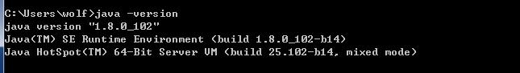
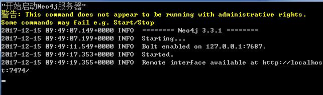

由于近期项目打算使用图数据库解决关系的问题,于是暂时选择了Neo4j这个数据库。
然而在安装的过程发现了一些问题,在Windows 7的旗舰版中安装后双击无法启动Neo4j数据库,虽然安装的是Java的1.7版本的JDK。
原本是Java的SDK的版本不是1.8的问题,然后发现还是启动不了。
下面我们通过Neo4j的社区服务器的方式来运行该图服务器。
我们可以通过如下链接下载最新版本3.3.1的服务器版本:
https://go.neo4j.com/download-thanks.html?edition=community&release=3.3.1&flavour=winzip
而其他版本可以可以通过下面的链接进行下载:
https://neo4j.com/download/other-releases/#releases
下载完成后我们解压到某个磁盘下,并将解压对应的文件夹修改为neo4j,方便后续的操作。
接着我们需要安装Java 8才可以正常运行,否则在运行的过程会提示版本不满足的问题。
我们可以通过java -version查看当前java的版本,一般安装后其结果类似如下:

如果我们使用的JDK,那么安装完成后我们设置环境变量JAVA_HOME,在Windows下可以通过如下的方式进行设置:
set JAVA_HOME=Java 8安装的路径
而实际上,对于Neo4j来说,安装JRE就可以了,甚至连环境变量都不用设置。
最后我们编写1个bat的脚本来手动启动服务器,虽然官方也提供了将其作为服务的方式,为了避免占用1个端口,我们选择手动启动。
@echo off echo "Start neo4j server..." D:\neo4j\bin\neo4j.bat console pause
之后我们将看到类似如下的界面:

最后我们可以手动打开浏览器访问http://localhost:7474,也可以直接输入如下的方式启动浏览器:
start firefox "http://localhost:7474"
这里直接调用火狐访问上述的URL地址。